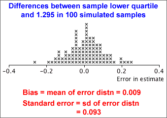

Normal distribution parameters
The mean, µ, of normal populations is usually of most interest, but we may also want to estimate:
The corresponding sample statistics provide point estimates of these parameters, but formulae for standard errors may be difficult to find.
Simulation
If the values of µ and σ were known, we could perform a simulation with repeated samples to find the error distribution for the type of estimate that we were using. The standard deviation of the error distribution gives the standard error of the estimate.
In practice, µ and σ are unknown, but we can perform a similar simulation, replacing them with the sample mean and standard deviation.
Example
Low assets-to-liabilities ratios are usually regarded as undesirable for companies. We want to find the assets-to-liabilities ratio that only one in four healthy companies will not meet — i.e the lower quartile of the distribution. The diagram below shows the assets-to-liabilities ratios of a sample of 68 healthy Greek companies and the point estimate of the lower quartile.
The assets-to-liabilities ratios have a fairly symmetric distribution and the diagram below shows a normal distribution whose mean and standard deviation are the same as those of our actual data.

This approximate normal distribution has lower quartile 1.295, so we can perform a simulation with samples of n = 68 values from this distribution and find how far the sample lower quartiles are from this theoretical value — the error distribution.

From the 70-95-100 rule-of-thumb, the error has approximately 95% chance of being within 2 s.e. of zero and will be almost certainly within 3 s.e. of zero. This means that our point estimate of the upper quartile (292 secs) is likely to be less than 9 sec from the underlying population parameter and will be almost certain to be less than 13.5 sec from it.